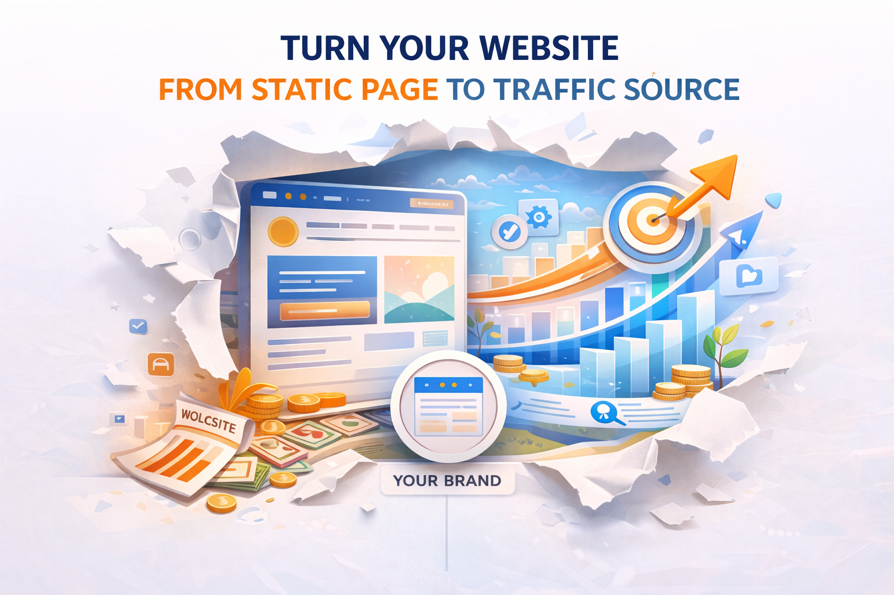

More organic traffic entry points
Each article becomes a new way for people to discover your website and services through search.
It is not just about generating articles. Through content and search traffic, your business website can steadily build visibility, visitors, and qualified leads, creating long-term content assets and a scalable traffic system over time.
Most business websites stop updating after launch, which leads to low search traffic, limited visibility, and fewer ongoing inquiries.
The core value of the Aplus AI SEO system is helping your website keep producing content and gradually building long-term traffic and qualified leads through search engines.
Once a website keeps creating search entry points, keeps getting discovered, and keeps getting read, it starts to develop real business growth potential.

Each article becomes a new way for people to discover your website and services through search.
The clearer and more complete your content becomes, the easier it is for search engines to understand and index your site.
Articles can continue bringing traffic over time instead of creating only one-time visibility.
Traffic should not remain just a number. It should move closer to forms, contact, and real business opportunities.
The value of SEO is not just putting articles online. It is about turning content step by step into search entry points, website traffic, and real inquiries.
Build content around real search demand and the topics your audience is actively looking for.
Bring in organic traffic through Google and search engines, increasing the chance for your website to be seen.
Guide visitors into your articles and service pages so they begin to understand your value and solutions.
Use forms, CTAs, and page design to gradually turn traffic into qualified leads.
Your website becomes more complete over time instead of staying limited to a few static pages.
As more articles are published, search entry points expand and traffic can grow over time.
You no longer rely entirely on paid traffic for customers and can gradually build your own organic traffic foundation.
Consistent content helps build expertise and brand credibility, making more potential customers willing to reach out.
The more complete your content becomes, the more search needs and questions your website can cover.
It starts functioning as a channel for traffic, visibility, and conversion, not just a brand introduction page.
Strong content is not only useful today. It can continue bringing visitors and inquiries in the future.
Book a demo and we will show you how AI SEO can help build a content growth system based on your industry, website situation, and content goals.